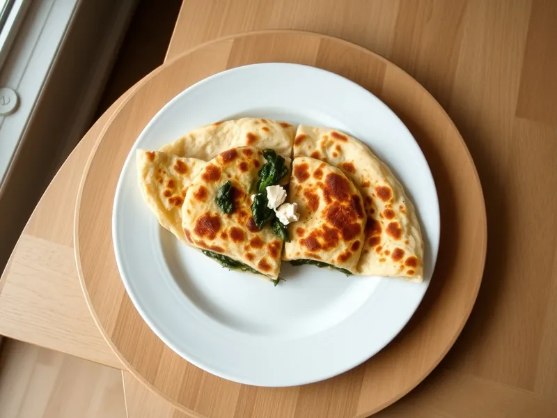

Фото: Иллюстрация ИИ, Cloudflare Workers AI
Гёзлеме из лаваша со шпинатом и брынзой
Турецкие лепёшки из тонкого лаваша с брынзой, шпинатом и яйцом на сковороде
20 мин2 порц.627 ккал на порциюБ 28 · Ж 33 · У 53Средиземноморская кухня
Продукты на 2 порц.
- Лаваш тонкий2 шт
- Брынза / фета150 г
- Шпинат150 г
- Зелёный лук0,5 пучка
- Яйцо куриное1 шт
- Сливочное масло20 г
- Растительное масло2 ч. л.
- Перец чёрный молотыйпо вкусу
Как готовить
- Обжарьте шпинат на сухой сковороде на среднем огне 2-3 минуты, пока он не осядет, отожмите лишнюю влагу.
- Раскрошите брынзу, мелко нарежьте лук, смешайте со шпинатом, яйцом и перцем.
- Разложите начинку на половину каждого лаваша, накройте второй половиной и подогните края, чтобы получился плоский конверт.
- Растопите на сковороде сливочное масло с растительным на среднем огне.
- Жарьте гёзлеме по 3 минуты с каждой стороны до золотистых пятен и горячей начинки, нарежьте на куски.
Совет. Замороженный шпинат тоже подходит: разморозьте и хорошо отожмите. Брынза солёная, поэтому соль не добавляйте.